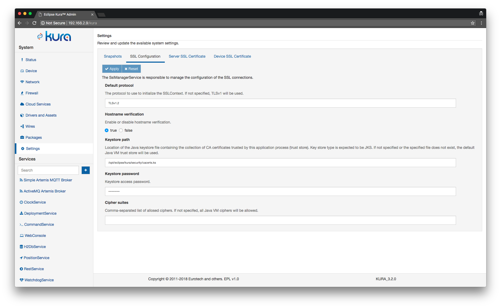

Amazon AWS IoT™ platform
Overview
This section provides a guide on connecting an Eclipse Kura™ device to the Amazon AWS IoT platform.
Prerequisites
- In order to connect a device to Amazon AWS IoT Kura version 1.3 or greater is required.
- An Amazon AWS account is also needed.
Device registration
The first step involves the registration of the new device on AWS, this operation can be done using the AWS Web Console or with the AWS CLI command line tool, in this guide the Web based console will be used.
1. Access the AWS IoT management console.
This can be done by logging in the AWS console and selecting IoT Core from the services list, in the Internet of Things section.
2. Create a default policy for the device.
This step involves creating a default policy for the new device, skip if an existing policy is already available.
Access the main screen of the console and select Secure -> Policies from the left side menu and then press the Create button, in the top right area of the screen.
Fill the form as follows and then press the Create button:
- Action ->
iot:Connect, iot:Publish, iot:Subscribe, iot:Receive, iot:UpdateThingShadow, iot:GetThingShadow, iot:DeleteThingShadow - Resource ARN ->
* - Effect ->
Allow
This will create a policy that allows a device to connect to the platform, publish/subscribe on any topic and manage its thing shadow.
3. Register a new device.
Devices on the AWS IoT platform are called things, in order to register a new thing select Manage -> Things from the left side menu and then press the Create button, in the top right section of the screen. Select Create a single thing.

Enter a name for the new device and then press the Next button, from now on kura-gateway will be used as the device name.
4. Create a new certificate for the device.
The AWS IoT platform uses SSL mutual authentication, for this reason it is necessary to download a public/private key pair for the device and a server certificate. Click on Create certificate to quickly generate a new certificate for the new device.
Certificates can be managed later on by clicking on Secure -> Certificates, in the left part of the console.
5. Download the device SSL keys.
You should see a screen like the following:

Download the 3 files listed in the table and store them in a safe place, they will be needed later, also copy the link to the root CA for AWS IoT in order to be able to retrieve it later from the device.
Press the Activate button, and then on Attach a policy.
6. Assign the default policy to the device.
Select the desired policy and then click on Register thing.
A policy can also be attached to a certificate later on perforiming the following steps:
Enter the device configuration section, by clicking on Manage -> Things and then clicking on the newly created device. Click on Security on the left panel and then click on the certificate entry (it is identified by an hex code), select Policies in the left menu, you should see this screen:

Click on Actions in the top left section of the page and then click on Attach policy, select the default policy previously created and then press the Attach button.
Device configuration
The following steps should be performed on the device, this guide is based on Kura 3.1.0 version and has been tested on a Raspberry PI 3.
7. Create a Java keystore on the device.
The first step for using the device keys obtained at the previous step is to create a new Java keystore containing the Root Certificate used by the Amazon IoT platform, this can be done executing the following commands on the device:
sudo keytool -import -trustcacerts -alias aws -file /tmp/root-CA.pem -keystore cacerts.ks -storepass changeit
If the last command reports that the certificate already exist in the system-wide store type yes to proceed. The code above will generate a new keystore with changeit as password, change it if needed.
8. Configure the SSL parameters using the Kura Web UI.
-
Open the Kura Web Console and enter select the Settings entry in the left side menu and then click on SSL Configuration, you should see this screen:

Change the Keystore path parameter to
/opt/eclipse/kura/security/cacerts.ksif needed.Change the settings in the form to match the screen above, set Default protocol to TLSv1.2, enter
changeitas Keystore Password (or the password defined at step 7).Warning
Steps from 8.2 to 8.6 will not work on Kura 3.2.0 due to a known issue. On this version, private key and device certificate need to be manually added to the keystore using the command line. If you are running Kura 3.2.0, proceed with step 8.7.
-
Open the Kura Web Console and enter select the Settings entry in the left side menu and then click on Device SSL Certificate, you should see this screen:

Enter
aws-sslin the Storage Alias field. -
The private key needs to be converted to the PKCS8 format, this step can be performed executing the following command on a Linux or OSX based machine:
openssl pkcs8 -topk8 -inform PEM -outform PEM -in xxxxxxxxxx-private.pem.key -out outKey.pem -nocryptwhere
xxxxxxxxxx-private.pem.keyis the file containing the private key downloaded at step 4. -
Paste the contents of the obtained
outKey.pemin the "Private Key" field. -
Paste the contents of
xxxxxxxxxx-certificate.pem.crtin the Certificate field.You should see a screen like this

-
Click the Apply button to confirm.
-
Kura 3.2.0 only - manually import device certificate and private key into keystore.
On the host machine, open a terminal window in the folder containing the files downloaded at step 5 and execute the following command:
openssl pkcs12 -export -in xxxxxxxxxx-certificate.pem.crt -inkey xxxxxxxxxx-private.pem.key -name aws-ssl -out aws-ssl.p12where
xxxxxxxxxx-certificate.pem.crtis the original certificate downloaded from AWS andxxxxxxxxxx-private.pem.keyis the private key.The command will ask for a password, define a new password.
Copy the obtained
aws-ssl.p12file to the device into the/tmpfolder using scp:Replacing
<device-address>with the hostname or ip address of the device.Open a ssh connection to the device and enter the following command:
sudo keytool -importkeystore -deststorepass changeit -destkeystore /opt/eclipse/kura/security/cacerts.ks -srckeystore /tmp/aws-ssl.p12 -srcstoretype PKCS12The command will ask for a password, enter the password defined when creating the
aws-ssl.p12file.Restart Kura to reload the keystore.
9. Setup a new cloud connection
-
Click on Cloud Connections in the left panel, and setup a new cloud connection
-
Click on the New Connection button at the top of the page and set the following parameters in the dialog:
- Cloud Connection Factory PID ->
org.eclipse.kura.cloud.CloudService - Cloud Connection Service PID ->
org.eclipse.kura.cloud.CloudService-AWS
Press the Create button to confirm and then select the newly created CloudService instance from the list.
- Cloud Connection Factory PID ->
-
Set the broker URL in the MqttDataTransport-AWS tab, it can be obtained from the AWS IoT Web Console clicking on the Settings entry in the bottom left section of the page, the URL will look like the following:
The mqtts protocol must be used, the value for the broker-url field derived from the URL above is the following:
-
Clear the value of the username and password fields.
-
Set a value for the topic.context.account-name and client-id.
-
Assign an arbitrary account name to topic.context.account-name (for example
aws-test), this will be used by the CloudClient instances for building the topic structure. -
Enter the thing name in the client-id field (in this example
kura-gateway).
-
-
In order for the previously added keys to be used for the SSL connection with the broker enter the Storage Alias defined in step 8.2 (e.g
aws-ssl) as value for the ssl.certificate.alias field. -
The setting lwt.topic under MqttDataTransport-AWS needs to be updated as well by entering a value not containing the $ character. This is required because of the fact that AWS IoT does not support topic names starting with $ (except for the $aws/ hierarchy).
-
Press the Apply button in the top left section to commit the changes to the MqttDataTransport-AWS.
-
Enter a name without the $ character for the topic.control-prefix setting in the CloudService-AWS tab, for example
aws-control. -
The Kura CloudService uses some well-known topics to allow remote device management and to report device state information, this features are not supported by default by AWS IoT, the following settings can be applied in the CloudService-AWS tab in order to avoid sending unnecessary messages:
- republish.mqtt.birth.cert.on.gps.lock ->
false - republish.mqtt.birth.cert.on.modem.detect ->
false - enable.default.subscriptions ->
false
- republish.mqtt.birth.cert.on.gps.lock ->
-
Click the Apply button to save the changes.
10. Connect to the cloud platform
Make sure the AWS CloudService instance is selected from the list in the top section of the page and click on the Connect button, if the connection to AWS IoT platform succeeds the Status of the instance will be reported as Connected.